2007 After Burn Report
Welcome
While BRC Census has been producing reports since 2002, it is hard to compare recent data with reports from earlier years (before 2013) because of important differences in methodology, from a convenience sample of self-selected Census takers on-playa to a weighted online survey conducted after the Man burns.
Personal Attributes
Which best describes the area in which you live?
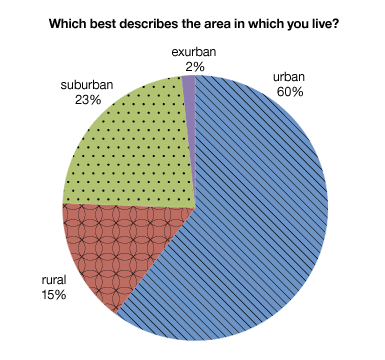
Are you an artist?
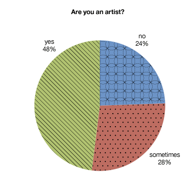
Do you consider yourself to be a person of color?

Do you consider yourself to be white?

For how many years have you llived at your current residence?

Did you graduate from college?
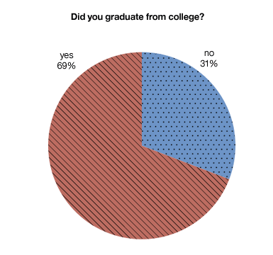
Are you eligible to vote in the US?

Are you employed?

What is your current gender?
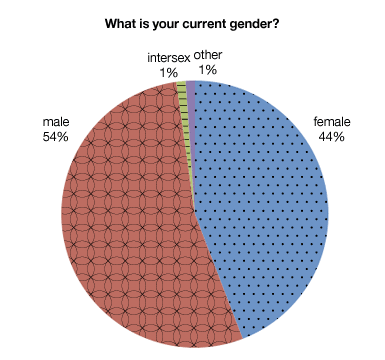
Which values are important to you?
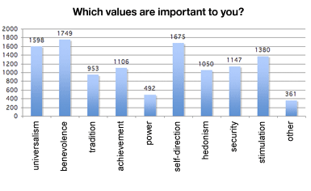
Which political parties have you been a member of?
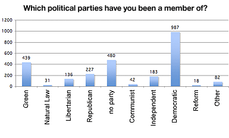
How many religious services do you attend each year?

How many years of school have you completed in your lifetime?

How important is spirituality to you?

Are you a student?
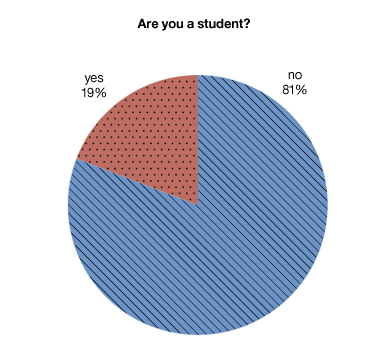
How often do you vote?

Why do you live where you live?
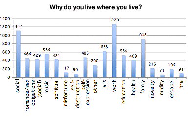
Family and Relationships
How many adults live in your home?
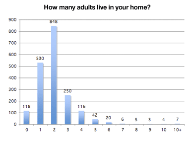
How many children live in your home?
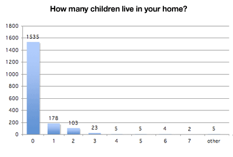
How many dependents do you have?

What is your martial status?
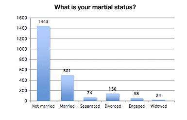
Were you married at Burning Man?
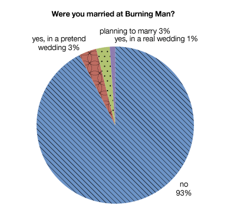
How often do you feel like an outsider at home?

Have you ever embarked on a significant romantic relationship with someone you met on the playa?

Income and Spending
What was your 2006 income before taxes?
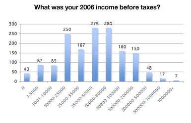
Do you own a home?

Which vehicles do you use at home during an average week?

Participation and Activities
What attracts you to Burning Man?
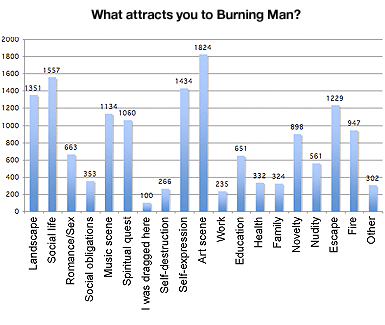
Is Black Rock City home to you?
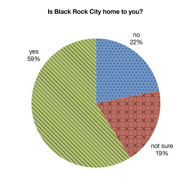
How many times have you attended another regional burn?

What free services have you used at Burning Man?
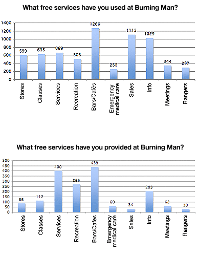
How did you get to Burning Man?
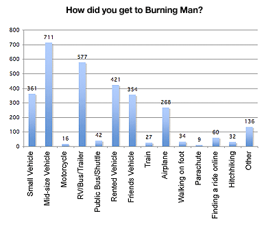
At Burning Man I feel there is an increased risk of...

The presence of law enforcement officers has been positive

How many people at Burning Man are like family to you?
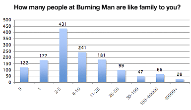
How often do you feel like an outsider at Burning Man?
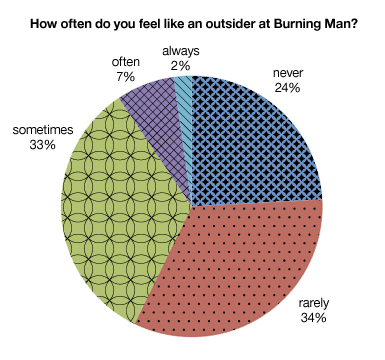
How many times have you attended Phoenix Festival in Oregon?
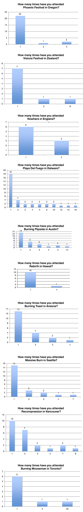
Do you plan on returning to Burning Man?

What are you up to at Burning Man?
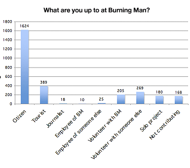
Do you visit Nevada for other reasons?

Did you volunteer outside of Burning Man this year?

Are you with a registered camp?
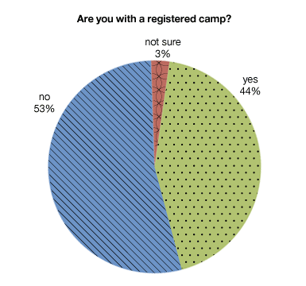
Who is with you at Burning Man this year?

Which years did you attend Burning Man?

Do you socialize with burners outside of Burning Man?
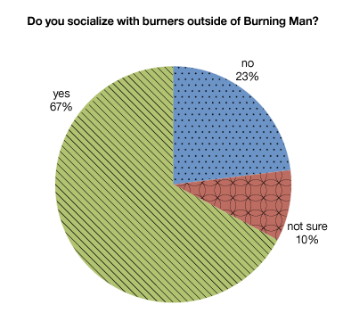